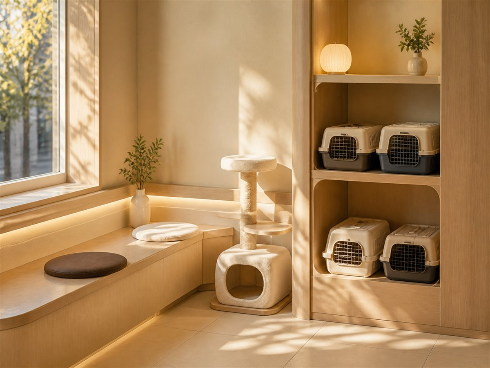

엉덩이를 흔들며 걷거나, 앉았다 일어날 때 힘들어하면 검사해 보세요.
리트리버 · 셰퍼드 · 말라뮤트
뒷다리를 들고 뛰거나 갑자기 절뚝이면 인대 손상을 의심합니다.
활동량 많은 아이들
배가 빵빵하고 헛구역질을 하면 응급입니다. 바로 오세요.
가슴 깊은 대형견

수술 후 근육이 붙어야 다시 걷습니다. 들판은 재활실을 따로 두고 단계별 프로그램을 운영합니다.
대형견 비만은 관절 수명을 직접 깎습니다. 무리한 굶기기 말고, 단계적으로 줄입니다.
진료대에 올라가는 것부터 훈련합니다. 무는 아이도 포기하지 않습니다.
당기는 힘이 세서 산책이 힘드시면, 협력 훈련사를 연결해 드립니다.
재활 기간에 활동량을 채울 방법을 함께 찾습니다.